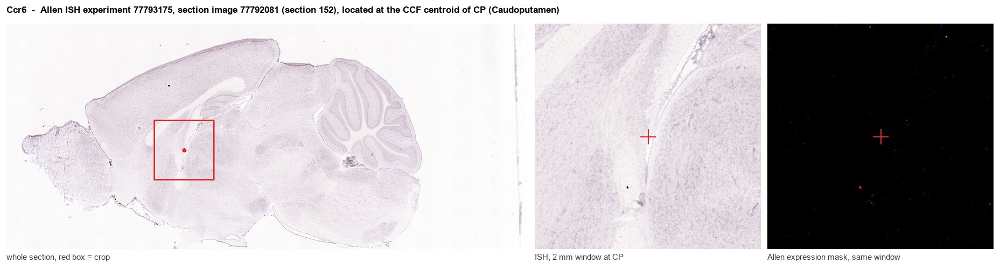
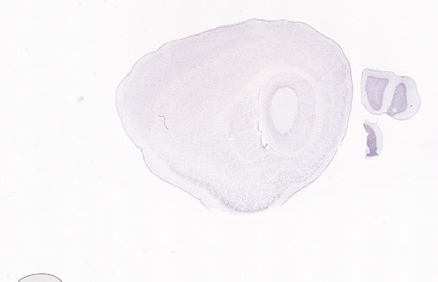
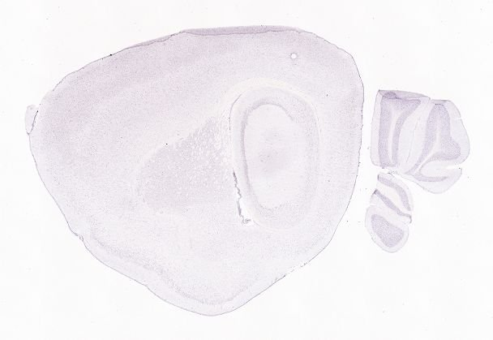
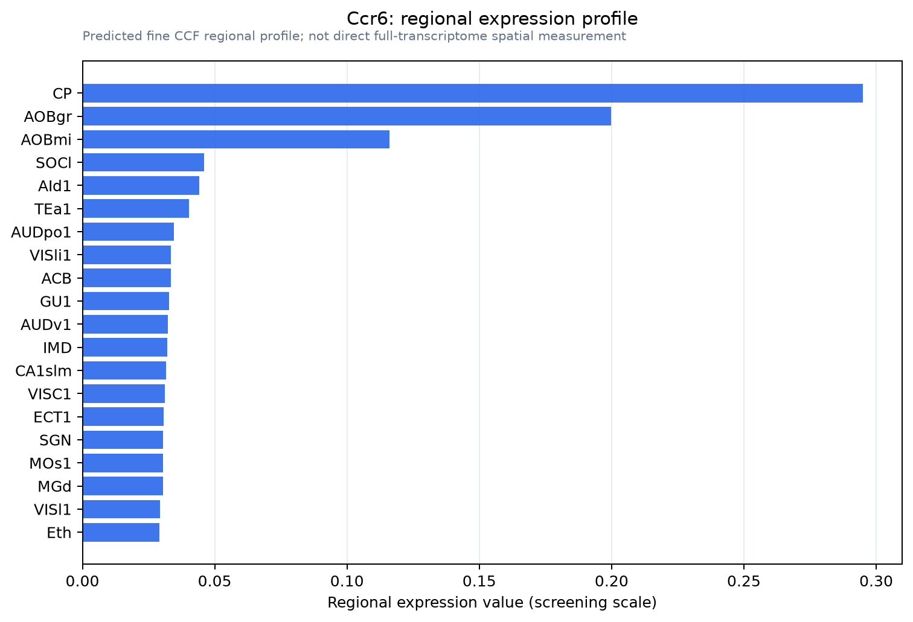

Ccr6
C-C chemokine receptor type 6 (C-C CKR-6) (CC-CKR-6) (CCR-6) (KY411) (CD antigen CD196)
Spatial tier: STRICT_EXCLUSIVE · Class: GPCR · Top region: CP (Caudoputamen) · Positive regions: 3/554
51.1Discovery Score
39.2Targetability Score
CEvidence grade C
What this means: Ccr6: predicted fine-region profile is strict-exclusive, with 3 positive regions out of 554 (limit 12); direct spatial validation is required.
Function in CP: evidence, prediction, innovation
- Gene function
- Ccr6 encodes CC chemokine receptor 6, a Gi-coupled GPCR whose only known ligand is CCL20 (MIP-3alpha), plus beta-defensins. Ligand binding lowers cAMP, mobilises calcium and drives chemotaxis. It is best known in immunology for guiding Th17 cells, Tregs, immature dendritic cells and B cells to mucosal tissue.
- Region function
- The caudoputamen is the main basal-ganglia input structure, where D1 and D2 spiny projection neurons plus cholinergic and PV interneurons control action selection, habit formation and reward learning.
- Published in this region
- inferred No region-specific literature found. The closest findings are neuronal CCR6 immunoreactivity in mouse hippocampus, transiently downregulated after pilocarpine status epilepticus (Liu et al. 2016), and cultured human neurons expressing functional chemokine receptors including CCR6 (Coughlan et al. 2000); nothing is published for striatum.
- Predicted function
- Prediction: any CCR6 signal in caudoputamen is most plausibly carried by microglia or infiltrating CCL20-responsive lymphocytes rather than spiny projection neurons, making it a neuroimmune recruitment channel relevant during striatal inflammation, ischaemia or Huntington/synuclein pathology. If genuinely neuronal, Gi coupling predicts CCL20 would lower cAMP and reduce excitability of the expressing subtype. Ccr6 knockout or CCL20 blockade should then alter immune infiltration and damage after striatal insult rather than baseline motor behaviour.
- Innovation
- ★★★★★ 5/5 CCR6 is essentially unstudied in the striatum and its cellular identity there (neuron versus microglia versus infiltrating T cell) is unresolved despite good immunology reagents.
- Tools
- Ccr6 knockout and Ccr6-EGFP knock-in reporter mice from the immunology field, recombinant CCL20, anti-CCR6 monoclonal antibodies; no neuron-specific Cre driver and no widely used small-molecule antagonist.
- References
Direct evidence located at the region

Allen ISH experiment 77793175, section image 77792081 (section 152): the section that contains the CCF centroid of Caudoputamen according to the Allen image-to-atlas alignment (reference_to_image), with a 2 mm window around that point. Left: whole section, red box = window. Middle: ISH signal. Right: Allen's expression-mask view of the same window. open this image in the Allen viewer
Look it up yourself: Allen Mouse Brain ISH for Ccr6Allen reference atlas: CP (structure 672)ABC Atlas MERFISH viewer(in the ABC Atlas choose dataset MERFISH-C57BL6J-638850-CCF, colour cells by gene "Ccr6" or by parcellation_substructure "CP")All genes confined to CP + 3-D brain
Direct spatial evidence
MERFISH REGION LOCATOR

DIRECT ALLEN ISH

DIRECT ALLEN ISH

Regional expression figure

Predicted WMB × fine-CCF profile; not direct full-transcriptome spatial measurement.
Spatial profile
Evidence and specificity
- Evidence status
- PREDICTED_FINE
- Direct sources
- None; predicted localization only
- Exclusive threshold
- 12 positive regions out of 554
- Spatial specificity
- 0.379
- Top-region fraction
- 0.180
- Filter status
- PASS
Interpretation limits
- Cell-type-to-region projection is imputed expression, not direct spatial measurement.
- Adult reference atlases do not establish stability across age, sex, strain, state, or disease.
- Transcript abundance does not guarantee protein abundance or genetic-tool performance.